|
|
|
|
|
|
|
|
In the Simulation Tool, you can set up simulation operations with a variety of patterns for checking and maintenance purposes and to emulate how your application will run when you download it.
In the Simulation Tool's Variable tab, select the check boxes of the variables that you want to set up with simulation operations.

When your project includes numerous external variables, you can use the following icons to display only specified variable types.
|
All variables |
|
|
BOOL variables |
|
|
Integer type variables |
|
|
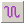 |
REAL variables |
|
STRING variables |
Click the Simulation tab. If the View All icon was selected, all variables selected in the Variable tab are displayed.
Select the variable you want to set up with a simulation operation.
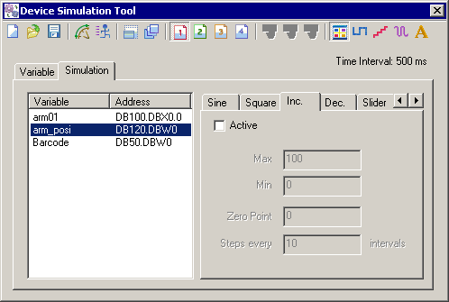
Click the desired operation, then select the Active checkbox to apply that operation to the variable.
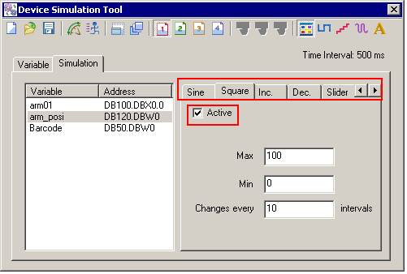

Only one simulation operation can be applied to any one variable at a time.
Define the parameters of the variable simulation operation.
|
Simulation Type |
Description |
|
Sine Wave |
Generates a sine wave pattern using amplitude, zero point, and time values. Available for integer and REAL variables. 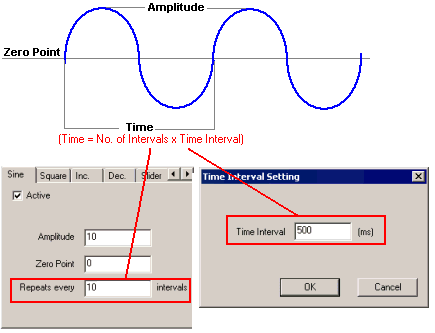 |
|
Square Wave |
Generates a square wave using minimum, maximum, and time values. Available for integer, REAL, and BOOL variables. 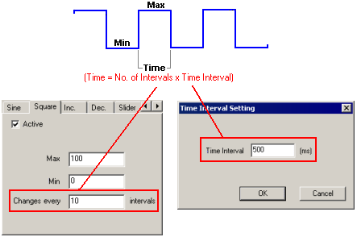 |
|
Increment |
Generates an increasing step pattern using maximum, increment, zero point, and time values. Available for integer and REAL variables. 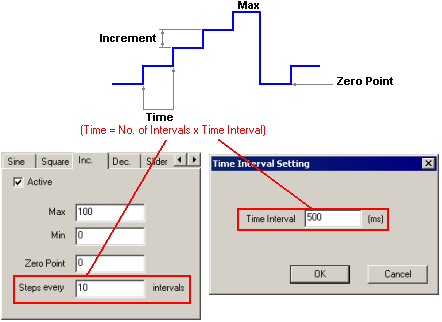 |
|
Decrement |
Generates a decreasing step pattern using maximum, decrement, zero point, and time values. Available for integer and REAL variables. 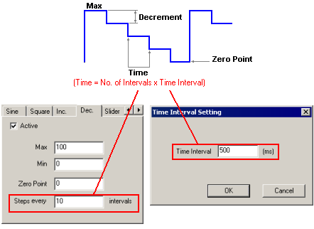 |
|
Slider |
Displays a slider control with the defined minimum and maximum values. Use the keyboard or the wheel on your mouse to change values. Available for integer, REAL, and BOOL variables. 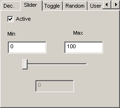 Keyboard keys operate as follows.
|
|
Toggle |
Writes the defined string to the variable when you click the Set or Reset button. Available for STRING variables only. 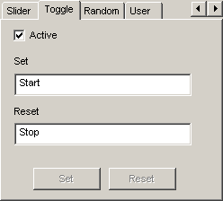 |
|
Random |
Generates random numbers using the defined minimum, maximum, and time values. Available for integer, REAL, and BOOL variables. 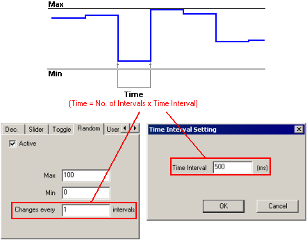 |
|
User |
Define variable values by separating each with a comma, plus define the interval value. Available for integer, REAL, and BOOL variables. 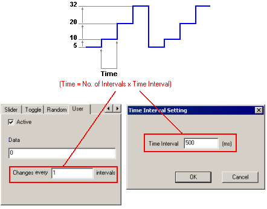 |
Repeat Steps 2 to 5 to set up other variables, as necessary.

By using the Set icons, you can define up to four sets of simulation settings—the variables selected in the Variable tab and the simulation operations set up in the Simulation tab. 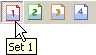
Although settings are cleared when you exit Simulation, you can save these settings to a file so you can reuse them. See Section 25.3.2.4, Saving Simulation Settings.
Click the Time Interval Setting icon to define the interval time in milliseconds (ms).
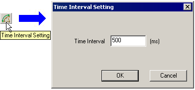
Click the Simulation icon to begin simulations.
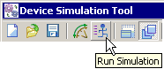
The title bar indicates the simulation operation is running.
Use the Simulation Tool to change variable values.
For example:
For a Slider operation, you can change the value by moving the slider, moving the wheel on your mouse, or typing the arrow keys on the keyboard.
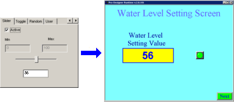
For a Toggle operation, click Set or Reset to write the corresponding string to the variable.
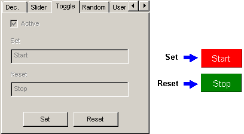
Click the Simulation icon again to stop the simulation.
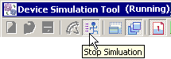

When you have multiple sets of simulation settings, you can interrupt the simulation of one set with another set by selecting one of the Set icons  then clicking the Simulation icon .
then clicking the Simulation icon .
Press CTRL+Z to exit simulation.